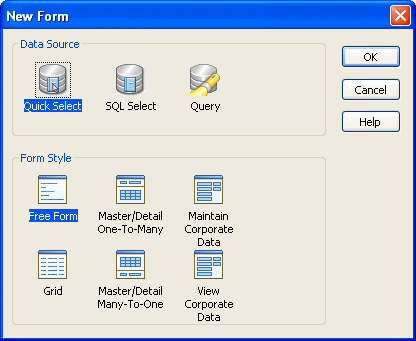

Once you complete a form style (or at least have a version that you want to test), you can put it to use.
 To make a style available to InfoMaker users:
To make a style available to InfoMaker users:
Make sure the window and menu that define the form style are in a library that is accessible to InfoMaker users (the style library).
Add any other PowerBuilder objects that you use in the form style (such as windows, user objects, global user-defined functions, and global structures) to the same library.
Add the style library to the path for an InfoMaker user.
For more information, see the InfoMaker User's Guide .
When an InfoMaker user using the style library creates a new form, all custom form styles display in the Form Style box in the New Form dialog box:

Custom styles display with a generic icon.
InfoMaker users simply select a data source and a custom style to start building a form based on your form style. You should provide documentation to users of your form styles.
When users build a form, they are working with a window that is a descendant of the window that you built for the form style. That is, the form style window you built in PowerBuilder is the ancestor, and the form window used in InfoMaker is the descendant. This means that if you change the form style, the changes are picked up the next time users work with a form using that style.
For example, you can add controls to the form style and have the controls display automatically when users later open existing forms using the style.
 Caution Be careful: do not make changes that invalidate forms already
built using the style.
Caution Be careful: do not make changes that invalidate forms already
built using the style.
You can store style libraries on the network to make them readily available to all InfoMaker users. You do this with a shared initialization file on a network: you place an InfoMaker initialization file that references the shared style libraries out on the network, then set up InfoMaker users so that they can access the initialization file.
 To make style libraries available throughout your
organization:
To make style libraries available throughout your
organization:
Place the style libraries on the network in a directory accessible to InfoMaker users.
Open InfoMaker, go to the Library painter, and make sure all style libraries are listed in the search path.
Close InfoMaker.
Copy your InfoMaker initialization file to a directory on the network that is accessible to all InfoMaker users.
This is the shared initialization file. It records all the style libraries in the StyleLib variable in the [Application] section.
Set up InfoMaker users so that they can access the shared initialization file.
Each InfoMaker user needs to specify the location of the shared initialization file in InfoMaker.
For more information, see "Specifying the location of the shared InfoMaker initialization file in InfoMaker".
Once the shared initialization file has been defined in a user's InfoMaker initialization file, the user's style library search path consists of the style libraries defined in the user's local InfoMaker initialization file plus all style libraries defined in the shared initialization file. When the user creates a new form, the form styles defined in all the style libraries display in the New Form dialog box.
Each InfoMaker user needs to tell InfoMaker where to find the shared initialization file.
 To specify the location of a shared InfoMaker
initialization file:
To specify the location of a shared InfoMaker
initialization file:
Select Tools>System Options from the InfoMaker menu bar.
On the General property page, enter the path for the shared InfoMaker initialization file.
Click OK.
InfoMaker saves the path for InfoMaker initialization in the registry.
You might not want the built-in form styles to be available to InfoMaker users. That is, you might want all forms to be based on one of your organization's user-defined styles. You can ensure this by suppressing the display of the built-in styles in the New Form dialog box.
 To suppress the display of built-in styles:
To suppress the display of built-in styles:
Set up a shared initialization file on the network as described in the preceding section.
Add this line to the [Window] section of the shared initialization file:
ShowStandardStyles = 0
With this line specified in the shared initialization file, users can choose only from user-defined form styles when creating a new form. (Note that a ShowStandardStyles line in a user's local InfoMaker initialization file is ignored by InfoMaker.)
This part explains how to package your application for deployment and what files you need to deploy.